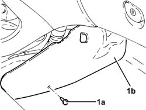
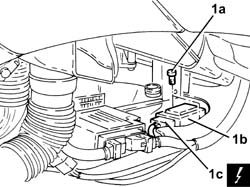

3350E30 lateral acceleration and yaw sensor r r
- Path
- Procedures > 33 BRAKING SYSTEM > 3350 DRIVE CONTROL' > 3350E vehicle direction control system vdc > 3350E30 lateral acceleration and yaw sensor r r
- Kind
- repair procedure (removal / refitting; the operation number is the code)
- Applies to
- all engines; all production periods
- Interactive page
- https://sloeber94.github.io/elrnDB-a156/en/#/3238110
Applies to: all engines; production: da 03/02 a 09/03, da 10/03
 Removing
Removing
 Refitting
RefittingEnsure that the ignition key is in the OFF postition, then disconnect the battery negative terminal.
 | Name | Connector |
|---|---|---|
- | Battery |
1. Release the buttons (1a) and remove the right console closing device (1b).

Applies to: all engines; production: da 03/02 a 09/03, da 10/03
1. Undo the bolt (1a) and remove the lateral acceleration and slew sensor (1b) after disconnecting the electrical connection (1c).
| Name | Connector |
|---|---|---|
1c | Slewing sensor (VDC) |

Applies to: all engines; production: da 03/02 a 09/03, da 10/03
Refitting
RemovingConnect the electrical connection to the lateral acceleration and slew sensor, then refit it in its seating and secure it using the bolts.
Place the right console closing device back in its housing and secure it using the buttons.
Connect the battery terminal (-).